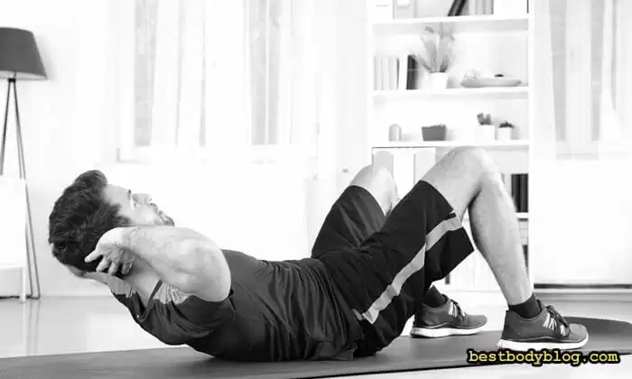

Програма тренувань вдома для чоловіків, про яку піде мова далі, розрахована на звичайних людей. Зрозуміло, що набирати масу у тренажерному залі простіше і швидше, правда, така можливість є не завжди і не у всіх. Але я вважаю, що впадати в розпач не варто. Скажу відразу, ураганного росту м’язів від цієї програми чекати не варто, але помітно накачатися у домашніх умовах вона допоможе. Про просту та ефективну програму домашніх тренувань, читайте далі.
Програма тренувань вдома
Як накачатися у домашніх умовах?
Зміст:
Про домашнє тренування відверто
Накачати м’язи як у Арнольда поза стінами тренажерного залу, та ще й, як дехто хоче швидко, не вийде. Справа навіть не у генетиці або у використанні стероїдів, проблема в іншому. У домашніх тренуваннях практично неможливо качати великі групи м’язів з використанням базових вправ і серйозних робочих навантажень.
По-перше, для цього потрібен якісний спортивний інвентар (грифи, стійки, млинці на штангу). А по-друге, у роботі з великою вагою необхідна присутність надійного тренувального партнера, якій розуміється на тому, куди дивитися та як допомагати. Тому, тренування у домашніх умовах по своєї віддачі завжди програватимуть заняттям у спортзалі.
Звичайно, накачати широку спину можна і на перекладині у дворі, а зміцнити ноги за допомогою вправ з гантелями. Але базові вправи (присідання зі штангою, станова тяга), крім того, що ростять масу всього тіла, ще й активно піднімають рівень гормону росту і тестостерону – основних анаболічних гормонів. Тому, якщо дома є лише гантелі, швидкість набору маси тіла завжди буде програвати зайняттям у тренажерній залі.
Висновок: набрати величезну м’язову масу, займаючись в домашніх умовах складно, а ось обзавестися спортивною статурою і рельєфними м’язами, можна.
Як часто тренуватися вдома
Тренуватися вдома, якщо сил, звичайно, вистачає, можна хоч кожен день. Тільки результат від подібного навантаження буде не таким, як на нього всі очікують. Щоденні тренування розвивають, насамперед, витривалість м’язів, а ось для збільшення їх обсягів вони малокорисні. М’язи ростуть не під час виконання вправ, а вночі, коли ми спимо. Для їх відновлення і росту потрібен час. Від 24 до 36 годин. Тому, схема, чим частіше тренуюся – тим швидше росте маса, тут не працює.
Якщо навантажувати ще не відновлену після минулого домашнього тренування групу м’язів, її можна швиденько загнати у стан перетренованості. Змусити ж рости після цього буде дуже складно. Проводити силові тренування, хоч новачку , хоч досвідченому чоловіку (якщо звичайно, мета – наростити м’язи), а не просто розвинути витривалість потрібно через день і обов’язково давати тілу і нервовій системі час на відпочинок та віднову.
Висновок: часто тренуватися вдома сенсу немає, оптимальний варіант – день тренування + день відпочинку.
Скільки має тривати домашнє тренування?
Не більше години, а ще краще хвилин 45-50 (без урахування розминки та заминки). Це стосується будь-якого силового тренування в домашніх умовах або в тренажерному залі. Качати м’язи довше ніхто не забороняє, але тут потрібно зауважити, що качати і накачати – це дві великі різниці. Щоб накачатися вдома, потрібно брати до уваги коливання гормонального фону. Ситуація з ним така: рівень тестостерону підвищується вже через 15-20 хвилин силового навантаження, а через годину в крові зростає рівень іншого гормону – кортізолу. Тестостерон допомагає м’язам рости, а кортизол, навпаки, їх руйнує.
Ефективна програма тренувань вдома для чоловіків (особливо після 40) повинна з одного боку забезпечити м’язам стрес, необхідний для запуску білкового синтезу (анаболізму) а з іншого – вберегти їх від руйнування (катаболізму). Тому, заняття має бути інтенсивним, щоб стимулювати зростання тестостерону і, в той же час, коротким.
Висновок: силове тренування вдома, що націлене на зростання маси тіла повинно тривати не більше години.
Розминка в домашніх умовах
Щоб там хто собі не гадав, але віддача від домашньої програми тренувань для чоловіків напряму залежить від якості розминки перед її початком. Виконання легких, розігріваючих вправ підвищує температуру тіла, робить м’язи і зв’язки (особливо, ротаторної манжети плеча) більш еластичними і готує їх до наступної важкої роботи. А розминка та ліктьових та колінних суглобів дозволяє виконувати технічно складні вправи більш правильно, безпечно і ефективно.
Далеко не у кожного вдома є сучасний кардіо-тренажер, але підготуватися до тренування можна і без його допомоги. Тривалість розминки може складати всього 10-15 хвилин, але навіть за такий короткий проміжок часу можна добряче підготувати тіло до виконання силових вправ з додатковим навантаженням.